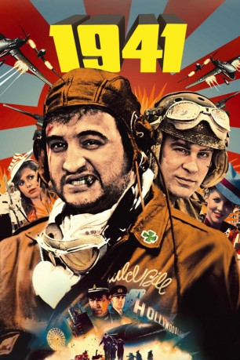

#8573 1941 - Wo bitte geht's nach Hollywood
Alternativ: 1941
Auszeichnungen: für 3 Oscars nominiert
 
 IMDB-Wertung: 5.8 / 10
IMDB-Wertung: 5.8 / 10  Metascore: 0
Metascore: 0 
Los Angeles, 1941: Als kurz nach dem Angriff auf Pearl Harbor ein japanisches U-Boot vor der Küste auftaucht, scheint die Filmmetropole dem Untergang geweiht. Zu allem entschlossen, treten einige wohlmeinende Patrioten an, ihr Land zu verteidigen – selbst wenn sie dabei die halbe Stadt in Schutt und Asche legen müssen.
Jahr: 1979
Dauer: 118 Minuten
FSK: 12
Land: USA Studio: Universal PicturesTonspuren:
Untertitel: Deutsch,
Auflösung: 1080p (1920x816) Größe: 8949 MB
Genre: Action, Komödie, Krieg
Regisseur:  Steven Spielberg
Steven Spielberg
Drehbuch: Robert Zemeckis
Soundtrack: John Williams
Darsteller:
Datei: X:\1979\1941 - Wo bitte geht's nach Hollywood (1979, FSK12, 1920x816).mkv seit 22.03.2018
Festplatte: HD 1971-1979
 Es gibt insgesamt 29 Filme in der Gruppe '1979'
Es gibt insgesamt 29 Filme in der Gruppe '1979'